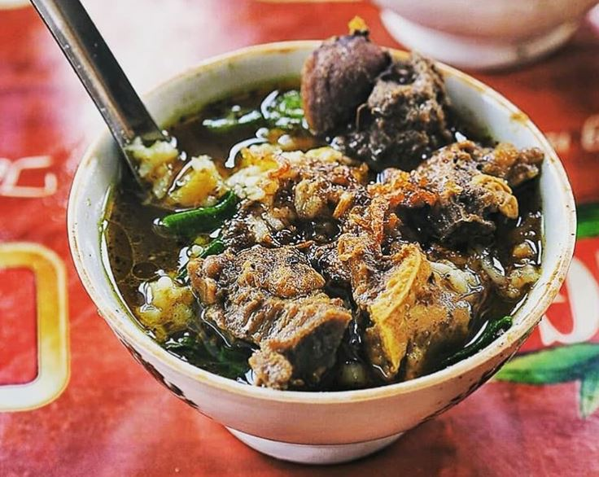
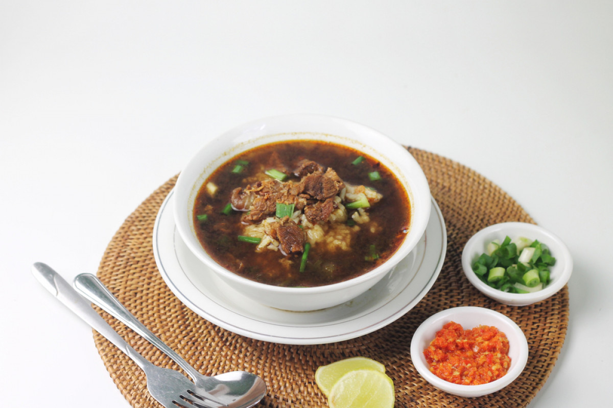

Sejarah

Nasi grombyang adalah sejenis nasi campur yang merupakan makanan khas dari masyarakat Pemalang, Jawa Tengah.[1] Nama makanan ini berasal dari bentuk penyajiannya, yaitu antara isi dan kuah lebih banyak kuahnya sehingga kelihatan bergoyang-goyang (bahasa Jawa: grombyang-grombyang, artinya "bergoyang-goyang").
Tidak diketahui dengan pasti kapan makanan khas ini mulai diciptakan. Namun menurut penuturan para orang tua di Pemalang, makanan khas nasi grombyang sudah ada sejak tahun 1960-an. Pada waktu itu penjual nasi grombyang menjual dagangannya secara tidak menetap, tetapi berkeliling kampung. Penjual nasi grombyang yang terkenal antara lain H. Warso di Jl. R.E. Martadinata di dekat alun-alun, serta H. Waridin di Sirandu dekat bekas terminal lama Pemalang.
Keunikan

Nasi Grombyang sekilas mirip dengan rawon karena bahan dasar yang digunakan juga sama-sama menggunakan kluwek. Namun perbedaannya kuah pada Nasi Grombyang lebih encer dan tidak sepkat rawon. Ramuan nasi grombyang terdiri dari nasi, irisan daging kerbau dan kuah, disajikan dalam mangkuk kecil dan dilengkapi dengan sate kerbau. Ciri khas lainnya dari nasi grombyang terletak pada tempat jualannya yang berupa kuali besar, tempat nasi ditutupi dengan kain merah, diserta penerangan remang-remang lampu templok. Pembeli menikmati hidangan dengan duduk di kursi kecil pendek (dingklik).
Keunikan Nasi Grombyang juga berasal dari namanya, kata "Grombyang" diangkat dari kata yang berasal dari bahasa Pemalang yang artinya bergoyang-goyang. Kata tersebut diambil dari cara penyajian Nasi Grombyang yang disajikan dengan mangkuk kecil yang isinya potongan daging kerbau atau sapi, nasi dan kuah Grombyang yang komposisi kuahnya biasanya lebih banyak daripada nasinya.
Resep Grombyang
Bahan
- 50 gram kelapa setengah tua, kupas, parut kasar
- 50 gram kelapa setengah tua, kupas, parut kasar
- 3 sdm tauco
- 2 lembar daun salam
- 3 batang serai, memarkan
- 1,5 liter air untuk merebus
- 5 sdm bawang goreng
- 4 porsi nasi putih
Bumbu halus
- 6 butir bawang merah
- 3 siung bawang putih
- 4 buah kluek, ambil dagingnya
- 1 sdm garam
- 3 sdt gula merah
Cara membuat
- Sangrai kelapa parut hingga kecoklatan, sisihkan. Rebus daging bersama tauco, daun salam, serai, hingga bumbu halus. Masak sampai bumbu meresap dan daging lunak, angkat.
- Sajikan nasi dalam piring bersama campuran daging, taburi dengan bawang goreng.